ECMAScript 6.0（以下简称 ES6）是 JavaScript 语言的下一代标准，已经在 2015 年 6 月正式发布了。它的目标，是使得 JavaScript 语言可以用来编写复杂的大型应用程序，成为企业级开发语言。这里主要记录下学习ES6中值得记录的地方，以备忘。
const恒量
cont限制的给恒量分配值得动作，而不是限制恒量里的值，比如下面这个例子失败的：
1 | const fruit = '🍎' |
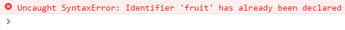
而下面这个例子是可行的：
1 | const fruit = [] |
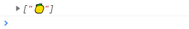
解构
解构就是将一个数据结构进行分解，通常分为数组解构，对象解构和参数解构。
数组解构
在ES6之前，要将数组里的每个值分配给一个变量，需要这样做:
1 | function food() { |
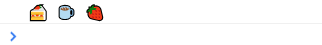
ES6后可以这样做：
1 | function food() { |
输出结果是一样的，是不是很方便？
对象解构
将food返回改为一个对象，然后解构：
1 | function food() { |
这里做的是将对象里的dessert属性值赋予给dessert1，依此类推，有点颠倒的感觉，结果如下：
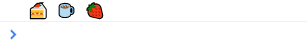
参数解构
使用对象解构的方式，我们可以很容易的给函数传递一个对象参数：
1 | function food(dessert, drink, {location, restaurant} = {}) { |
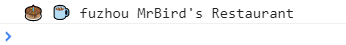
模板字符串
ES6之前的字符串拼接：
1 | let weather = '🌞', mood = '😄', drink = '🍸' |
ES6后我们可以这样做：
1 | let weather = '🌞', mood = '😄', drink = '🍸' |
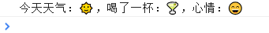
带标签的模板字符串
可以在模板字符串前加个标签，这个标签是个函数，我们可以在这个函数里输出一些值：
1 | let weather = '🌞', mood = '😄', drink = '🍸' |
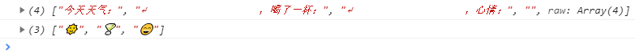
可以看到，strings里的内容是模板字符串的每一个部分，...params包含的是模板字符串里的所有变量值。
字符串几个新方法
以什么开头startsWith，以什么结尾endsWith，是否包含includes：
1 | let weather = '🌞', mood = '😄', drink = '🍸' |
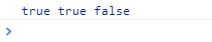
参数默认值
ES6后我们可以给函数参数指定默认值：
1 | function food(dessert = '🎂', drink = '🍵') { |
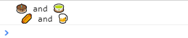
操作符...
展开操作符
在数组前加...，称为展开操作符，可以用于展开数组：
1 | let fruits = ['🍍', '🍎'], |
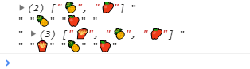
剩余操作符
在函数参数前加...，称为剩余操作符，用于接收函数剩下的参数：
1 | function food(dessert,drink,...foods) { |
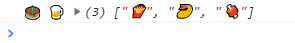
剩余的参数被放到了一个数组里。
函数的名字
ES6函数新增了name属性，用于输出函数的名字:
1 | function food() { } |
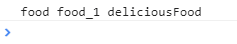
Object新增方法
Object.is()
判断两个东西是不是同一个：
1 | console.log(+0 == -0) |
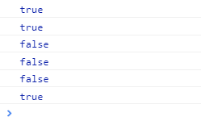
Object.assign()
作用就是将一个对象的内容赋予给另外一个对象：
1 | let food = {dessert:'🍦'} |
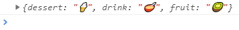
第一个参数为接收者，第二个参数为赋予者。
Object.setPrototypeOf()
设置对象的prototype，给个例子体会：
1 | let breakfast = { |
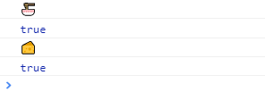
__proto__
我们还可以用__proto__（前后各两个下划线）设置对象的prototype：
1 | let breakfast = { |
super
看下super的用法：
1 | let lunch = { |
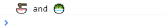
生成迭代器
ES6中我们可以使用function*和yield生成一个迭代器：
1 | function* cook(foods) { |
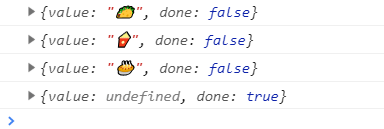
class类
ES6允许我们在JavaScript中定义一个类：
1 | class Cook { |
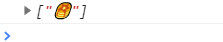
类里包含了一个有参构造器和方法。
get && set
我们可以在类里定义get和set：
1 | class Cook { |
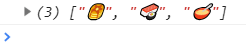
静态方法
我们可以在类里定义静态方法，静态方法就是不需要实例化类就能调用的方法：
1 | class Cook { |
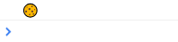
继承
ES6允许我们继承类：
1 | class Person { |
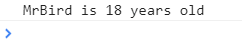
Set
一些Set的常用操作：
1 | let foods = new Set('🧀🍧🍨') |
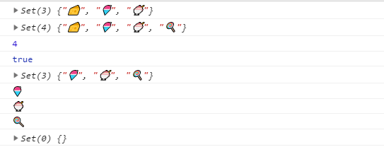
Map
一些Map的常用操作：
1 | let food = new Map() |
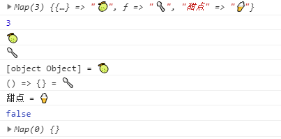
先到这里吧，详细的还是得参考http://es6.ruanyifeng.com/